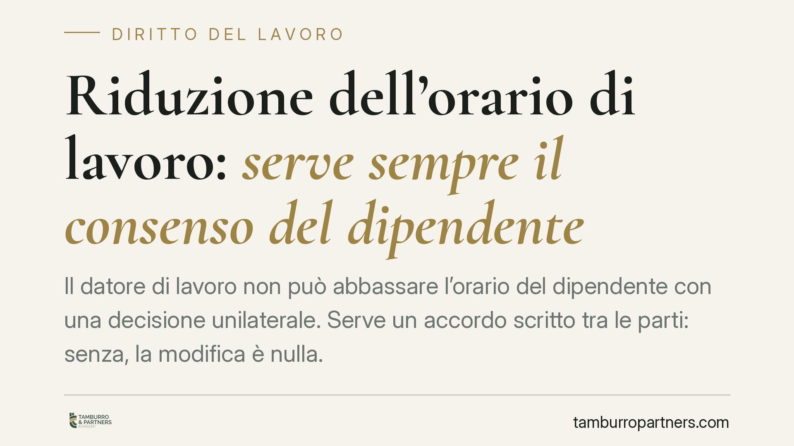

Riduzione dell'orario di lavoro: serve sempre il consenso del dipendente
Il datore di lavoro non può abbassare l'orario del dipendente con una decisione unilaterale. Serve un accordo scritto tra le parti: senza, la modifica è nulla. La Cassazione ha inoltre chiarito che il rifiuto del lavoratore di accettare la riduzione non integra un valido motivo di licenziamento. Un punto rilevante per chi affronta ristrutturazioni o cali di attività.

Il fatto
La domanda ricorre spesso nei momenti di difficoltà aziendale: davanti a un calo di commesse, il datore può ridurre l'orario di un dipendente a tempo pieno — e quindi la relativa retribuzione — senza chiedere il suo assenso?
La risposta della giurisprudenza è netta: no. La trasformazione del rapporto da tempo pieno a tempo parziale (o comunque la riduzione dell'orario) presuppone un accordo. In assenza, la modifica imposta unilateralmente è priva di effetti.
Inquadramento normativo
Il riferimento centrale è l'art. 6 del d.lgs. 81/2015, che disciplina il lavoro a tempo parziale. La norma stabilisce che il passaggio dal tempo pieno al part-time deve avvenire con il consenso del lavoratore e risultare da atto scritto. Non è quindi una prerogativa che il datore possa esercitare in via autoritativa.
Sul versante opposto, l'art. 2104 del codice civile definisce l'obbligo di diligenza e l'assoggettamento del dipendente alle direttive del datore. Ma tale potere direttivo riguarda le modalità di esecuzione della prestazione, non la sua estensione temporale e retributiva: quest'ultima è un elemento essenziale del contratto, che non può essere modificato in peggio senza l'accordo di entrambe le parti.
Diverse pronunce di merito — tra cui i Tribunali di Benevento, Milano e Napoli — hanno confermato questa impostazione, in linea con l'orientamento della Cassazione Civile: la riduzione unilaterale dell'orario è nulla, e il rifiuto del dipendente di accettarla non costituisce di per sé giusta causa o giustificato motivo di licenziamento.
Implicazioni pratiche
Per il datore di lavoro la conseguenza è concreta. Se impone una riduzione di orario senza consenso, il dipendente conserva il diritto alla retribuzione piena. Le somme non corrisposte diventano differenze retributive dovute, con possibili interessi e rivalutazione. In caso di licenziamento fondato sul rifiuto, il recesso rischia l'invalidità, con obbligo di reintegra o indennizzo a seconda del regime applicabile.
Per il dipendente, la tutela è chiara: la comunicazione di riduzione oraria non lo obbliga ad accettare. Continuare a offrire la propria prestazione secondo l'orario contrattuale originario, e formalizzare la propria posizione, è la via corretta per non prestare acquiescenza a una modifica illegittima.
Attenzione però a un profilo spesso trascurato: il comportamento concludente. Se il lavoratore accetta di fatto il nuovo orario ridotto per un periodo prolungato, senza contestazioni, può profilarsi il rischio di un consenso tacito. Per questo la reazione tempestiva e documentata è decisiva.
Esistono strumenti alternativi e leciti per gestire i cali di attività — come gli ammortizzatori sociali (cassa integrazione) o gli accordi collettivi di riduzione temporanea — che non passano dall'imposizione individuale. La riduzione concordata resta possibile, ma solo come frutto di una scelta condivisa e messa per iscritto.
Cosa fare in concreto
- Formalizzate sempre per iscritto. Qualsiasi modifica dell'orario deve risultare da un accordo firmato da entrambe le parti; una comunicazione unilaterale non produce effetti.
- Contestate tempestivamente. Se ricevete una riduzione imposta, inviate una comunicazione scritta di dissenso, ribadendo la disponibilità a lavorare secondo l'orario contrattuale originario.
- Conservate la documentazione. Buste paga, comunicazioni aziendali, mail e cartellini presenze sono elementi utili per ricostruire l'accaduto ed evitare che il silenzio venga letto come accettazione.
- Valutate gli strumenti alternativi. Il datore che affronta difficoltà dovrebbe verificare l'accesso agli ammortizzatori sociali o a intese collettive, anziché agire in via unilaterale.
- Chiedete una verifica preventiva. Prima di sottoscrivere o rifiutare, un esame delle clausole contrattuali e del CCNL applicabile consente di comprendere la reale portata della richiesta.
---
*Contributo informativo a cura di Tamburro & Partners - Avv. Giuseppe Tamburro. Non costituisce parere legale.*
Ogni storia di lavoro ha i suoi tempi.
Se gestisci HR e vuoi un confronto su contenzioso, ispezioni o licenziamenti, scrivi allo studio. Ti rispondiamo entro un giorno lavorativo.